Chapter 6 igraph를 이용한 네트워크 시각화
네트워크의 시각화는 설정할 수 있는 다양한 파라미터들을 가지고 있다. 여기에는 (vertex.으로 시작하는) 노드 옵션들과 (edge.으로 시작하는) 에지 옵션들을 포함한다. 일부의 옵션 목록은 다음과 같으며, 더 많은 정보는 ?igraph.plotting로 확인할 수 있다.
? igraph.plotting## starting httpd help server ... doneigraph의 플로팅 파라미터들은 다음과 같다.
Plotting parameters
| NODES | |
|---|---|
| vertex.color | Node color |
| vertex.frame.color | Node border color |
| vertex.shape | One of “none,” “circle,” “square,” “csquare,” “rectangle” “crectangle,” “vrectangle,” “pie,” “raster,” or “sphere” |
| vertex.size | Size of the node (default is 15) |
| vertex.size2 | The second size of the node (e.g. for a rectangle) |
| vertex.label | Character vector used to label the nodes |
| vertex.label.family | Font family of the label (e.g.“Times,” “Helvetica”) |
| vertex.label.font | Font: 1 plain, 2 bold, 3, italic, 4 bold italic, 5 symbol |
| vertex.label.cex | Font size (multiplication factor, device-dependent) |
| vertex.label.dist | Distance between the label and the vertex |
| vertex.label.degree | The position of the label in relation to the vertex, where 0 right, “pi” is left, “pi/2” is below, and “-pi/2” is above |
| EDGES | |
| edge.color | Edge color |
| edge.width | Edge width, defaults to 1 |
| edge.arrow.size | Arrow size, defaults to 1 |
| edge.arrow.width | Arrow width, defaults to 1 |
| edge.lty | Line type, could be 0 or “blank,” 1 or “solid,” 2 or “dashed,” 3 or “dotted,” 4 or “dotdash,” 5 or “longdash,” 6 or “twodash” |
| edge.label | Character vector used to label edges |
| edge.label.family | Font family of the label (e.g.“Times,” “Helvetica”) |
| edge.label.font | Font: 1 plain, 2 bold, 3, italic, 4 bold italic, 5 symbol |
| edge.label.cex | Font size for edge labels |
| edge.curved | Edge curvature, range 0-1 (FALSE sets it to 0, TRUE to 0.5) |
| arrow.mode | Vector specifying whether edges should have arrows, possible values: 0 no arrow, 1 back, 2 forward, 3 both |
| OTHER | |
| margin | Empty space margins around the plot, vector with length 4 |
| frame | if TRUE, the plot will be framed |
| main | If set, adds a title to the plot |
| sub | If set, adds a subtitle to the plot |
노드와 에지 옵션을 두 가지 방법으로 설정할 수 있다 - 첫 번째는 plot() 함수 안에서 다음과 같이 옵션을 설정하는 것이다.
# 곡선형 에지와 화살표 크기 조절하기 :
plot(net, edge.arrow.size=.4, edge.curved=.1)
# 에지 색을 회색으로 그리고 노드 색을 오렌지 색으로 설정하기 :
# "media"에 저장된 노드 이름을 노드의 라벨로 대체
plot(net, edge.arrow.size=.2, edge.curved=0,
vertex.color="orange", vertex.frame.color="#555555",
vertex.label=V(net)$media, vertex.label.color="black",
vertex.label.cex=.7) 
두 번째 방법은 igraph 개체에 옵션을 추가하는 것이다. 네트워크의 노드를 media.type 에 따라 색을 지정하고, audience.size(대규모 audience는 노드를 크게)에 따라 노드의 크기를 설정해 보자. 또한 가중치에 따라 에지의 넓이를 바꿀 수도 있다.
# media 종류에 따라 색 지정하기 :
colrs <- c("gray50", "tomato", "gold")
V(net)$color <- colrs[V(net)$media.type]
# 고객의 규모에 따라 노드의 크기 지정하기 :
V(net)$size <- V(net)$audience.size*0.7
# 라벨들은 현 노드의 ID이다.
# 라벨을 NA로 설정하면 라벨이 표시되지 않는다.
V(net)$label.color <- "black"
V(net)$label <- NA
# 가중치에 따라 에지의 넓이를 지정하기 :
E(net)$width <- E(net)$weight/6
# 화살표 크기와 에지 색을 변경하기 :
E(net)$arrow.size <- .2
E(net)$edge.color <- "gray80"
E(net)$width <- 1+E(net)$weight/12또한 plot()에 명시적으로 속성을 지정할 수 있다.
plot(net, edge.color="orange", vertex.color="gray50") 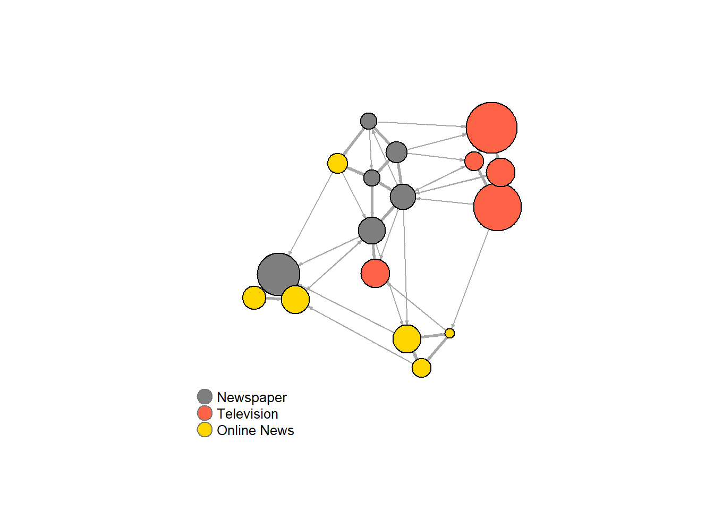
우리가 사용한 색의 의미를 설정하는 범례를 추가할 수 있다 :
plot(net)
legend(x=-1.5, y=-1.1, c("Newspaper","Television", "Online News"), pch=21,
col="#777777", pt.bg=colrs, pt.cex=2, cex=.8, bty="n", ncol=1)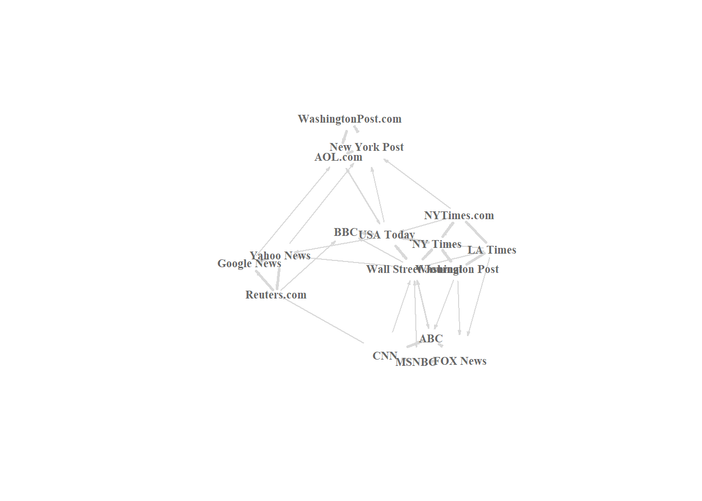
때때로 의미 네트워크의 경우 특히, 노드의 라벨만을 표시하고자 할 때가 있다.:
plot(net, vertex.shape="none", vertex.label=V(net)$media,
vertex.label.font=2, vertex.label.color="gray40",
vertex.label.cex=.7, edge.color="gray85")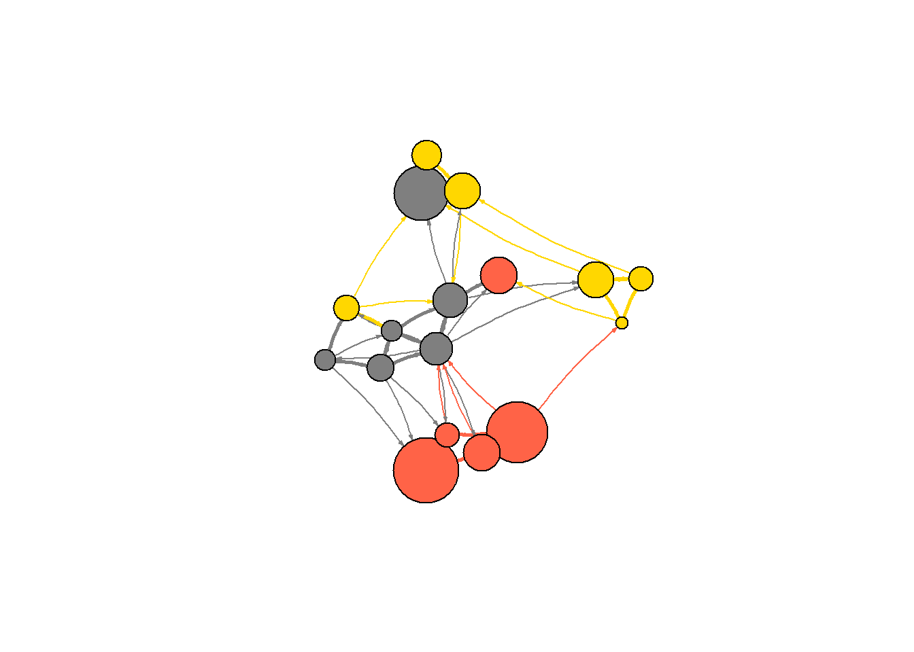
원천 노드의 색에 따라 그래프의 에지 색을 지정할 수 있다. igraph 패키지의 end() 함수로 각 에지의 시작 노드를 알 수 있다.
edge.start <- ends(net, es=E(net), names=F)[,1]
edge.start## [1] 1 1 1 1 2 2 2 2 3 3 3 3 3 3 3 4 4 4 4 4 5 5 5 5 6
## [26] 6 7 7 7 7 8 8 8 9 10 12 12 12 13 13 14 14 15 15 15 16 16 17edge.col <- V(net)$color[edge.start]
plot(net, edge.color=edge.col, edge.curved=.1) 
6.1 Network layouts
네트워크 레이아웃(Network layouts)은 네트워크 내에 있는 각 노드에 대한 좌표를 반환하는 단순 알고리듬이다.
레이아웃을 이해하기 위해 약간 규모가 큰 80개 노드로 구성된 그래프를 생성하기로 한다. 사전에 설정된 선호도 수준에 따라 하나의 노드에서 시작해서 더 많은 노드와 에지를 추가하는 단순 그래프를 생성하는 sample_pa() 함수를 사용한다(Barabasi-Albert model).
net.bg <- sample_pa(80)
V(net.bg)$size <- 8
V(net.bg)$frame.color <- "white"
V(net.bg)$color <- "orange"
V(net.bg)$label <- ""
E(net.bg)$arrow.mode <- 0
plot(net.bg)
plot() 함수 안에 레이아웃을 설정할 수 있다:
plot(net.bg, layout=layout_randomly)
또는 먼저 노드의 좌표를 계산할 수 있다 :
l <- layout_in_circle(net.bg)
l## [,1] [,2]
## [1,] 1.000000e+00 0.000000e+00
## [2,] 9.969173e-01 7.845910e-02
## [3,] 9.876883e-01 1.564345e-01
## [4,] 9.723699e-01 2.334454e-01
## [5,] 9.510565e-01 3.090170e-01
## [6,] 9.238795e-01 3.826834e-01
## [7,] 8.910065e-01 4.539905e-01
## [8,] 8.526402e-01 5.224986e-01
## [9,] 8.090170e-01 5.877853e-01
## [10,] 7.604060e-01 6.494480e-01
## [11,] 7.071068e-01 7.071068e-01
## [12,] 6.494480e-01 7.604060e-01
## [13,] 5.877853e-01 8.090170e-01
## [14,] 5.224986e-01 8.526402e-01
## [15,] 4.539905e-01 8.910065e-01
## [16,] 3.826834e-01 9.238795e-01
## [17,] 3.090170e-01 9.510565e-01
## [18,] 2.334454e-01 9.723699e-01
## [19,] 1.564345e-01 9.876883e-01
## [20,] 7.845910e-02 9.969173e-01
## [21,] 6.123032e-17 1.000000e+00
## [22,] -7.845910e-02 9.969173e-01
## [23,] -1.564345e-01 9.876883e-01
## [24,] -2.334454e-01 9.723699e-01
## [25,] -3.090170e-01 9.510565e-01
## [26,] -3.826834e-01 9.238795e-01
## [27,] -4.539905e-01 8.910065e-01
## [28,] -5.224986e-01 8.526402e-01
## [29,] -5.877853e-01 8.090170e-01
## [30,] -6.494480e-01 7.604060e-01
## [31,] -7.071068e-01 7.071068e-01
## [32,] -7.604060e-01 6.494480e-01
## [33,] -8.090170e-01 5.877853e-01
## [34,] -8.526402e-01 5.224986e-01
## [35,] -8.910065e-01 4.539905e-01
## [36,] -9.238795e-01 3.826834e-01
## [37,] -9.510565e-01 3.090170e-01
## [38,] -9.723699e-01 2.334454e-01
## [39,] -9.876883e-01 1.564345e-01
## [40,] -9.969173e-01 7.845910e-02
## [41,] -1.000000e+00 1.224606e-16
## [42,] -9.969173e-01 -7.845910e-02
## [43,] -9.876883e-01 -1.564345e-01
## [44,] -9.723699e-01 -2.334454e-01
## [45,] -9.510565e-01 -3.090170e-01
## [46,] -9.238795e-01 -3.826834e-01
## [47,] -8.910065e-01 -4.539905e-01
## [48,] -8.526402e-01 -5.224986e-01
## [49,] -8.090170e-01 -5.877853e-01
## [50,] -7.604060e-01 -6.494480e-01
## [51,] -7.071068e-01 -7.071068e-01
## [52,] -6.494480e-01 -7.604060e-01
## [53,] -5.877853e-01 -8.090170e-01
## [54,] -5.224986e-01 -8.526402e-01
## [55,] -4.539905e-01 -8.910065e-01
## [56,] -3.826834e-01 -9.238795e-01
## [57,] -3.090170e-01 -9.510565e-01
## [58,] -2.334454e-01 -9.723699e-01
## [59,] -1.564345e-01 -9.876883e-01
## [60,] -7.845910e-02 -9.969173e-01
## [61,] -1.836910e-16 -1.000000e+00
## [62,] 7.845910e-02 -9.969173e-01
## [63,] 1.564345e-01 -9.876883e-01
## [64,] 2.334454e-01 -9.723699e-01
## [65,] 3.090170e-01 -9.510565e-01
## [66,] 3.826834e-01 -9.238795e-01
## [67,] 4.539905e-01 -8.910065e-01
## [68,] 5.224986e-01 -8.526402e-01
## [69,] 5.877853e-01 -8.090170e-01
## [70,] 6.494480e-01 -7.604060e-01
## [71,] 7.071068e-01 -7.071068e-01
## [72,] 7.604060e-01 -6.494480e-01
## [73,] 8.090170e-01 -5.877853e-01
## [74,] 8.526402e-01 -5.224986e-01
## [75,] 8.910065e-01 -4.539905e-01
## [76,] 9.238795e-01 -3.826834e-01
## [77,] 9.510565e-01 -3.090170e-01
## [78,] 9.723699e-01 -2.334454e-01
## [79,] 9.876883e-01 -1.564345e-01
## [80,] 9.969173e-01 -7.845910e-02plot(net.bg, layout=l)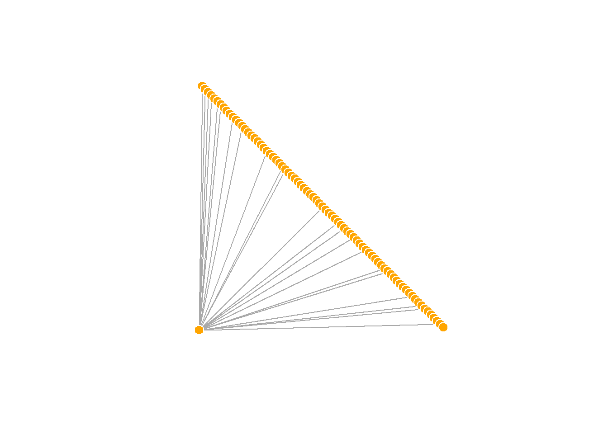
l 은 그래프에 있는 N개 노드에 대하여 단순히 x, y 좌표로 구성되는 (N x 2) 행렬이다. 쉽게 생성할 수 있다 :
l <- cbind(1:vcount(net.bg), c(1, vcount(net.bg):2))
l## [,1] [,2]
## [1,] 1 1
## [2,] 2 80
## [3,] 3 79
## [4,] 4 78
## [5,] 5 77
## [6,] 6 76
## [7,] 7 75
## [8,] 8 74
## [9,] 9 73
## [10,] 10 72
## [11,] 11 71
## [12,] 12 70
## [13,] 13 69
## [14,] 14 68
## [15,] 15 67
## [16,] 16 66
## [17,] 17 65
## [18,] 18 64
## [19,] 19 63
## [20,] 20 62
## [21,] 21 61
## [22,] 22 60
## [23,] 23 59
## [24,] 24 58
## [25,] 25 57
## [26,] 26 56
## [27,] 27 55
## [28,] 28 54
## [29,] 29 53
## [30,] 30 52
## [31,] 31 51
## [32,] 32 50
## [33,] 33 49
## [34,] 34 48
## [35,] 35 47
## [36,] 36 46
## [37,] 37 45
## [38,] 38 44
## [39,] 39 43
## [40,] 40 42
## [41,] 41 41
## [42,] 42 40
## [43,] 43 39
## [44,] 44 38
## [45,] 45 37
## [46,] 46 36
## [47,] 47 35
## [48,] 48 34
## [49,] 49 33
## [50,] 50 32
## [51,] 51 31
## [52,] 52 30
## [53,] 53 29
## [54,] 54 28
## [55,] 55 27
## [56,] 56 26
## [57,] 57 25
## [58,] 58 24
## [59,] 59 23
## [60,] 60 22
## [61,] 61 21
## [62,] 62 20
## [63,] 63 19
## [64,] 64 18
## [65,] 65 17
## [66,] 66 16
## [67,] 67 15
## [68,] 68 14
## [69,] 69 13
## [70,] 70 12
## [71,] 71 11
## [72,] 72 10
## [73,] 73 9
## [74,] 74 8
## [75,] 75 7
## [76,] 76 6
## [77,] 77 5
## [78,] 78 4
## [79,] 79 3
## [80,] 80 2plot(net.bg, layout=l)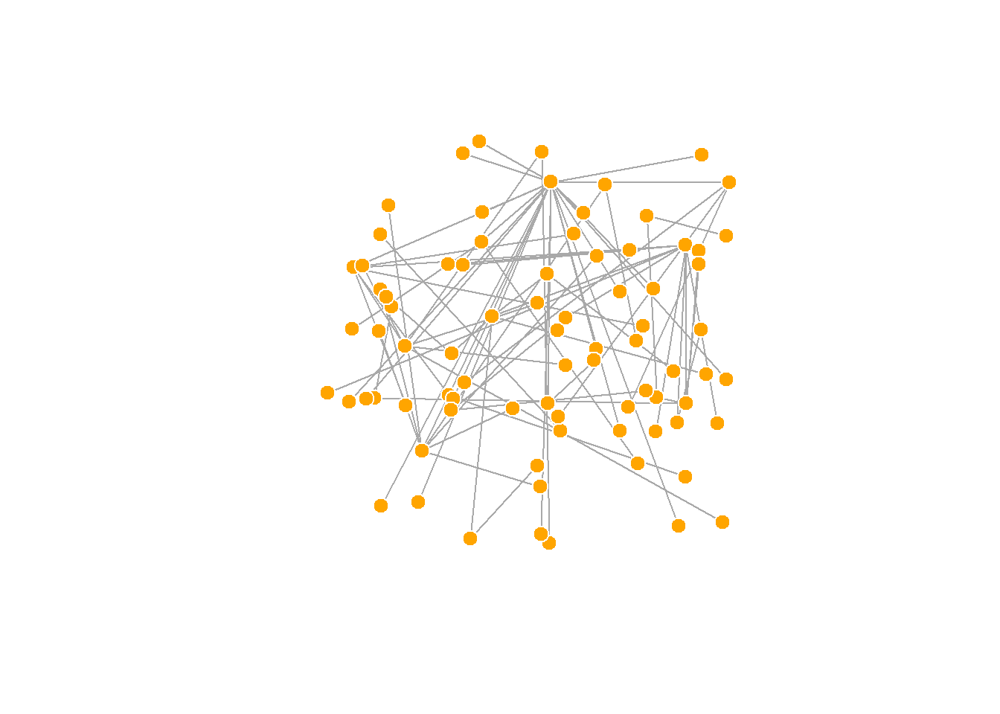
사전에 네트워크 레이아웃을 설정하고 이를 적용하는 것도 가능하다. 또한 igraph 패키지에 내장된 네트워크 레이아웃 함수는 다음과 같다.
layout.random(): 임의 네트워크 배치layout.circle(): 원형태 네트워크 배치layout.sphere(): 구형태 네트워크 배치
이 레이아웃은 단지 예를 든 것이며 크게 도움이 되는 것은 아니다. 다행히도 igraph는 다음과 같은 다양한 내장된 레이아웃을 가지고 있다 :
# 정점을 무작위로 배치하기
l <- layout_randomly(net.bg)
plot(net.bg, layout=l)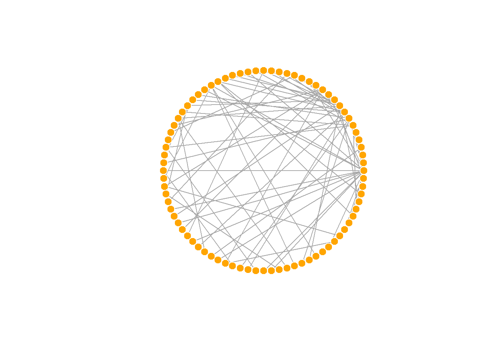
# 원형 레이아웃
l <- layout_in_circle(net.bg)
plot(net.bg, layout=l)
# 3D 구형 레이아웃
l <- layout_on_sphere(net.bg)
plot(net.bg, layout=l)
- 그 밖의 레이아웃 함수들 :
layout_as_bipartite(),layout_as_star(),layout_as_tree(),layout_in_circle(),layout_nicely(),layout_on_grid(),layout_on_sphere(),layout_randomly(),layout_with_dh(),layout_with_fr(),layout_with_gem(),layout_with_graphopt(),layout_with_kk(),layout_with_lgl(),layout_with_mds(),layout_with_sugiyama()
심미적으로 보기 좋은 네트워크 그래프를 얻기 위해 많은 알고리즘이 제안되었고, Fruchterman-Reingold 알고리즘을 비롯한 다양한 알고리즘이 존재한다. 물리학에서 가져온 스프링, 힘 등의 개념을 노드와 엣지에 적용하여 컴퓨터의 도움을 얻어 데이터가 크지 않은 경우 빠른 시간내에 시각화가 가능하다.
Fruchterman-Reingold 알고리즘인 layout_with_fr() 함수는 심미적으로 보기 좋은 네트워크 그래프를 위한 레이아웃 알고리즘 중의 하나이다. Force-directed 네트워크 배치 알고리즘은 에지 길이가 비슷하고, 엣지가 가능하면 서로 거의 겹치지 않는 그래프를 생성하고자 한다. 이는 물리시스템으로 그래프를 모의시험한다. 노드는 서로 가까워지면 서로 밀어내는 성질을 갖는 전기적 성격을 갖는 입자이며, 에지는 연결된 노들들을 서로 가깝게 끌어들이는 스피링처럼 동작한다.
결과적으로 노드는 시각화 평면에 골고루 분산되어 위치하게 되고, 더 많은 연결점을 갖는 노드는 서로 더 가까이 위치하게 된다는 점에서 직관적이다. 이런 유형의 알고리즘이 갖는 단점은 실행 시간에 오래 걸리며, 따라서 ~ 1,000 개보다 큰 노드를 갖는 그래프에는 잘 사용되지 않는다. 일부 모수를 조정해서 네트워크 그래프를 조정하는 것도 가능하다.
area: 기본 설정값으로 노드 제곱repulserad: 밀어내는 반경weight: 노드 사이 끌림을 증대
예를 들어, weight 인수를 이용하여 강한 에지로 연결되는 노드 사이의 매력도를 증가시킬 수 있다.
l <- layout_with_fr(net.bg)
plot(net.bg, layout=l)
이 레이아웃은 확정적이지 않다는 것을 알 수 있다. 시행할 때마다 결과는 약간씩 다를 것이다. 레이아웃을 변수 l에 저장하면 여러분 동일한 결과를 가질 수 있게 해 준다. 즉, 그래프의 시간에 따른 진화를 시각화하거나, 또는 서로 다른 관계성을 시각화하고자 할 때 도움이 될 수 있으며, 노드들이 여러 플롯에서 같은 장소에 위치하게 하고자 할 때도 도움이 된다.
par(mfrow=c(2,2), mar=c(0,0,0,0)) # 2행 2열로 4개의 그림 그리기
plot(net.bg, layout=layout_with_fr) #
plot(net.bg, layout=layout_with_fr) # 위의 레이아웃과 다름
plot(net.bg, layout=l) #
plot(net.bg, layout=l) # 위의 레이아웃과 같음
dev.off()## null device
## 1기본 값으로, 플롯의 좌표들은 x와 y 모두 [-1, 1] 구간으로 재설정된다. 이 구간은 rescale = FALSE 파라미터로 변경할 수 있으며, 좌표에 상수 값을 곱해서도 수작업으로 재설정할 수 있다.
또한 norm_coords() 함수를 이용하여 우리가 원하는 경계로 플롯을 정규화할 수도 있다.
l <- layout_with_fr(net.bg)
l <- norm_coords(l, ymin=-1, ymax=1, xmin=-1, xmax=1)
par(mfrow=c(2,2), mar=c(0,0,0,0))
plot(net.bg, rescale=F, layout=l*0.4)
plot(net.bg, rescale=F, layout=l*0.6)
plot(net.bg, rescale=F, layout=l*0.8)
plot(net.bg, rescale=F, layout=l*1.0)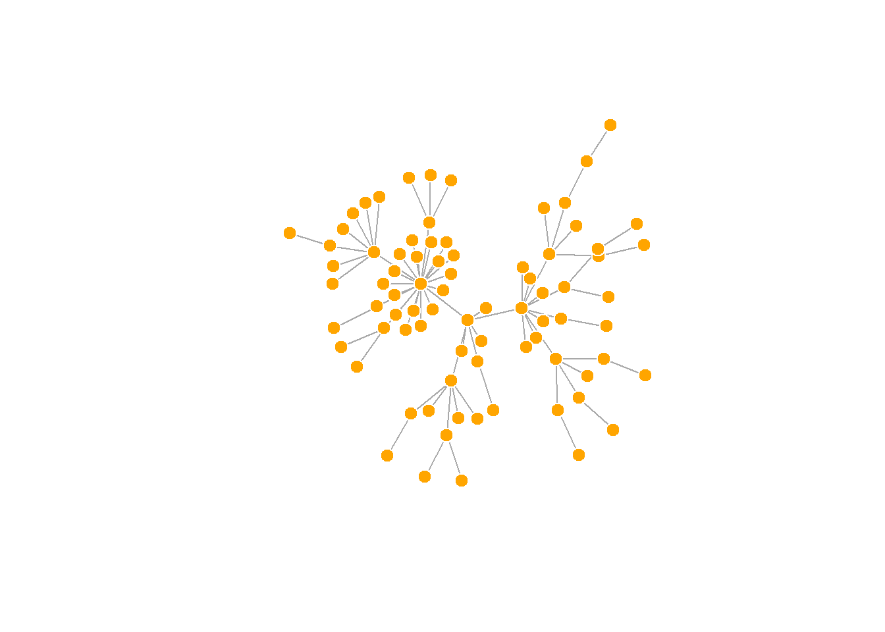
dev.off()## null device
## 1fruchterman.reingold.grid() 함수는 fruchterman.reingold()와 유사하지만 속도가 더 빠르다.
또 다른 알고리즘으로 Kamada Kawai 알고리즘인 layout_with_kk() 함수가 있다. Fruchterman Reingold 처럼 스프링 시스템에서의 에너지를 최소화하고자 한다.
l <- layout_with_kk(net.bg)
plot(net.bg, layout=l)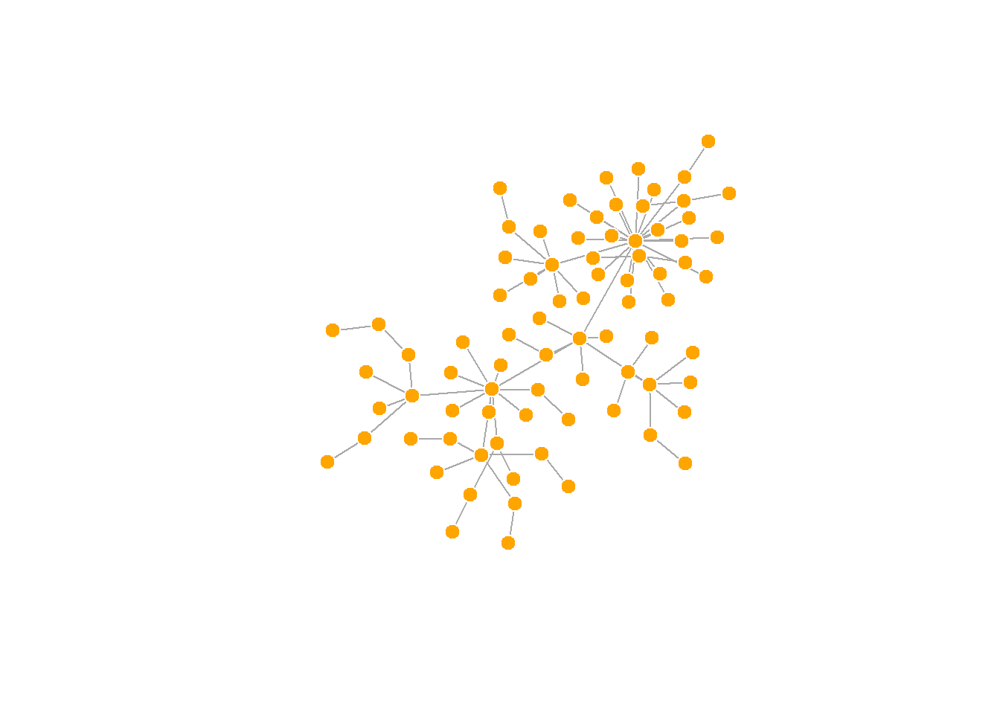
LGL 알고리즘인 layout_with_lgl() 함수는 대규모(large)의 연결된 그래프를 의미한다. 여기에서 레이아웃을 중심에 위치하는 root를 지정할 수 있다.
plot(net.bg, layout=layout_with_lgl)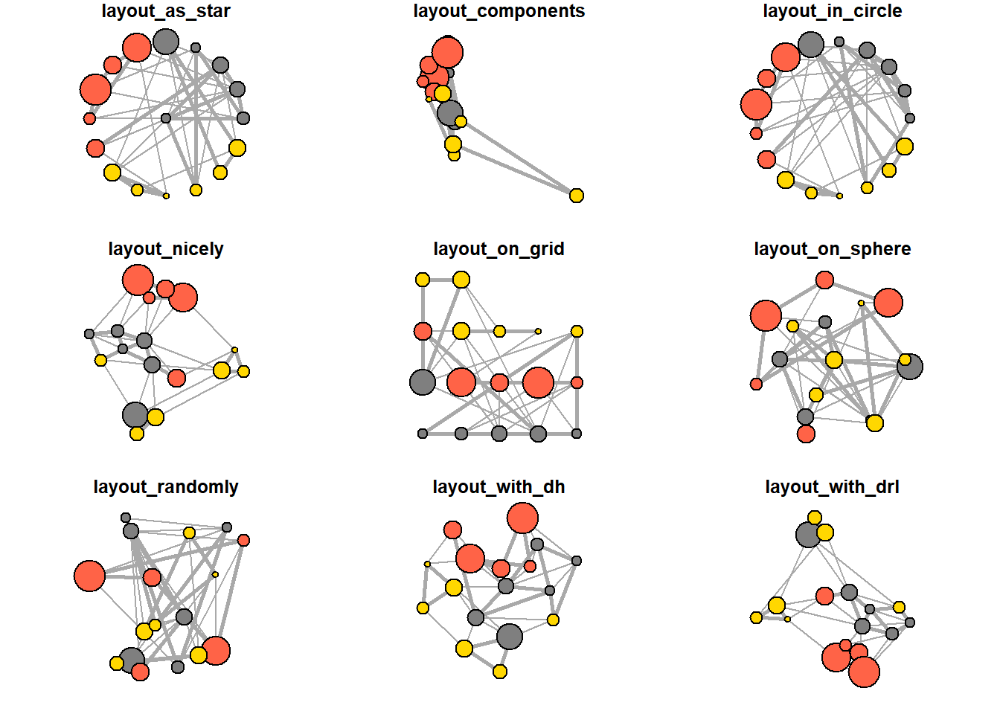
igraph 패키지에서 이용가능한 모든 레이아웃들은 다음과 같이 살펴볼 수 있다 :
? igraph::layout_
layouts <- grep("^layout_", ls("package:igraph"), value=TRUE)[-1]
# 우리의 그래프에 적용되지 않는 레이아웃 제거
layouts <- layouts[!grepl("bipartite|merge|norm|sugiyama|tree", layouts)]
par(mfrow=c(3,3), mar=c(1,1,1,1))
for (layout in layouts) {
print(layout)
l <- do.call(layout, list(net))
plot(net, edge.arrow.mode=0, layout=l, main=layout)
}## [1] "layout_as_star"## [1] "layout_components"## [1] "layout_in_circle"## [1] "layout_nicely"## [1] "layout_on_grid"## [1] "layout_on_sphere"## [1] "layout_randomly"## [1] "layout_with_dh"## [1] "layout_with_drl"
## [1] "layout_with_fr"## [1] "layout_with_gem"## [1] "layout_with_graphopt"## [1] "layout_with_kk"## [1] "layout_with_lgl"## [1] "layout_with_mds"
6.2 네트워크 시각화 개선
아직 네트워크의 시각화가 그렇게 도움이 되지 않음을 알 수 있다. 노드의 형태와 크기를 지정할 수 있지만, 우리가 검토하고 있는 연결들이 너무 조밀해서 그 구조를 그렇게 잘 파악하기가 쉽지 않다. 이를 위한 하나의 접근방법은 가장 중요한 연결에만 집중하고 나머지는 제거함으로써 네트워크를 간소화할 수 있는지를 알아보는 것이다.
hist(links$weight)mean(links$weight)## [1] 12.40816sd(links$weight)## [1] 9.905635중요한 에지들을 추출하는 좀 더 복잡한 방법이 있지만 여기서는 네트워크의 평균 가중치 보다 더 큰 가중치를 갖는 노드들만 집중하기로 한다.
igraph 패키지에서는 delete_edges(net, edges) 함수를 이용하여 에지들을 삭제할 수 있다 :
cut.off <- mean(links$weight)
net.sp <- delete_edges(net, E(net)[weight < cut.off])
plot(net.sp) 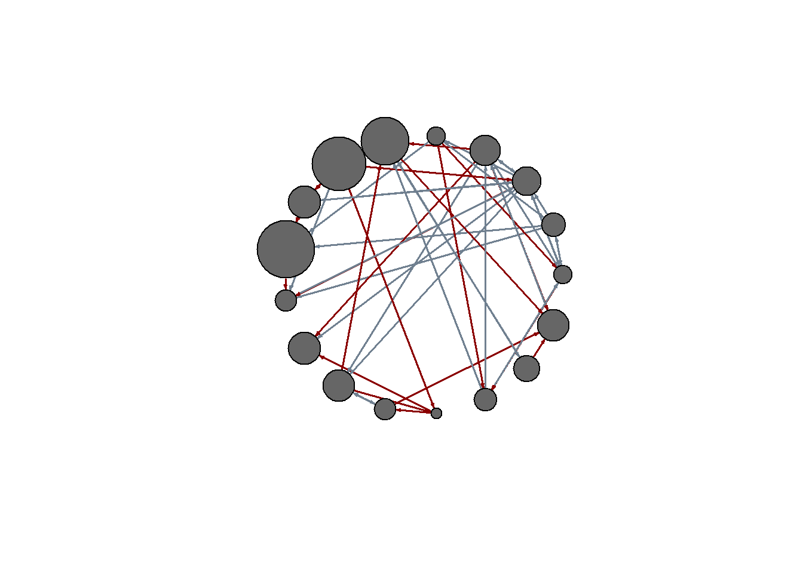
이에 대한 또 다른 고려 방법은 두 개의 연결 유형(hyperlink와 mention)을 따로 시각화하는 것이다.
E(net)$width <- 1.5
plot(net, edge.color=c("dark red", "slategrey")[(E(net)$type=="hyperlink")+1],
vertex.color="gray40", layout=layout.circle)두 개의 link들을 따로 플롯하기 :
net.m <- net - E(net)[E(net)$type=="hyperlink"] # another way to delete edges
net.h <- net - E(net)[E(net)$type=="mention"]
# 두 개의 link를 따로 시각화하기
par(mfrow=c(1,2))
plot(net.h, vertex.color="orange", main="Tie: Hyperlink")
plot(net.m, vertex.color="lightsteelblue2", main="Tie: Mention")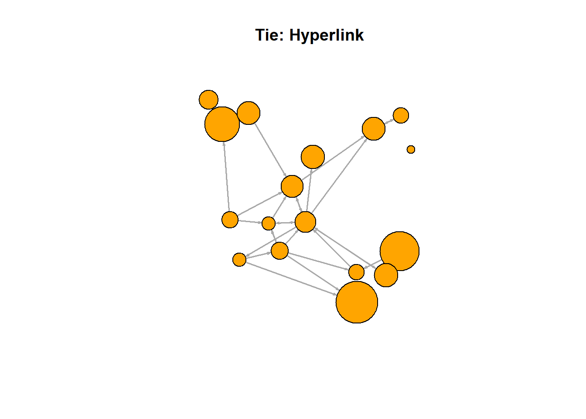
두 개의 플롯에서 존재하는 노드들을 확인하기 :
l <- layout_with_fr(net)
plot(net.h, vertex.color="orange", layout=l, main="Tie: Hyperlink")
plot(net.m, vertex.color="lightsteelblue2", layout=l, main="Tie: Mention")
dev.off()## null device
## 16.3 tkplot 패키지를 이용한 상호대화식 시각화
R과 igraph는 상화대화식 네트워크 시각화를 지원한다. 이는 소규모 그래프의 레이아웃을 약간 변경하고 싶을 때 유용한 옵션이 될 수 있다. 레이아웃을 수작업으로 수정한 다음, 노드의 좌표를 확인하고 다른 좌표에서 이용할 수 있다.
tkid <- tkplot(net) # tkid는 tkplot의 ID
l <- tkplot.getcoords(tkid) # tkplot에서 좌표 확인하기
tk_close(tkid, window.close = T)
plot(net, layout=l)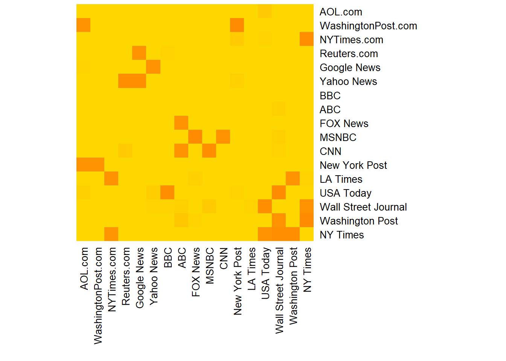
6.4 다른 네트워크 시각화 방법
이제 네트워크를 공모양의 플롯에 국한하지 않고 표시할 수 있는 많은 다양한 방법이 있음을 알아야 한다.
예를 들어, 네트워크 행렬의 히트맵이 있다 :
netm <- get.adjacency(net, attr="weight", sparse=F)
colnames(netm) <- V(net)$media
rownames(netm) <- V(net)$media
palf <- colorRampPalette(c("gold", "dark orange"))
heatmap(netm[,17:1], Rowv = NA, Colv = NA, col = palf(100),
scale="none", margins=c(10,10) )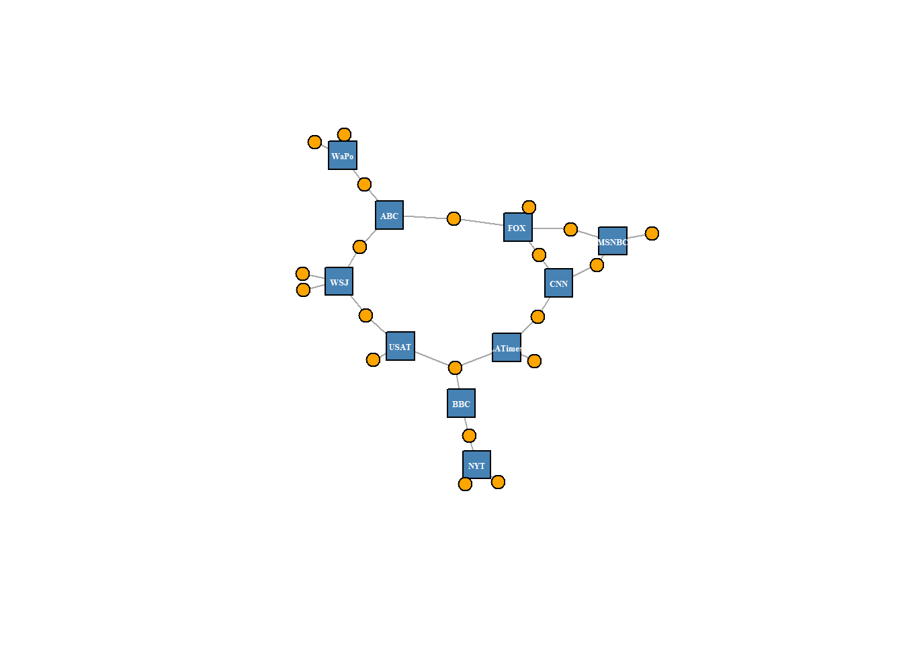
6.5 igraph로 2-모드 네트워크 시각화하기
1-모드 네트워크에서는 네트워크를 플롯팅할 때 기본 기본 값으로 사용될 수 있는 시각화 속성들을 포함하여 네트워크 개체를 수정할 수 있다. 이번에는 노드의 모양- media는 정사각형으로 그리고 그들의 사용자들은 원형으로-을 변경할 수 있음을 주목하라.
V(net2)$color <- c("steel blue", "orange")[V(net2)$type+1]
V(net2)$shape <- c("square", "circle")[V(net2)$type+1]
V(net2)$label <- ""
V(net2)$label[V(net2)$type==F] <- nodes2$media[V(net2)$type==F]
V(net2)$label.cex=.4
V(net2)$label.font=2
plot(net2, vertex.label.color="white", vertex.size=(2-V(net2)$type)*8) 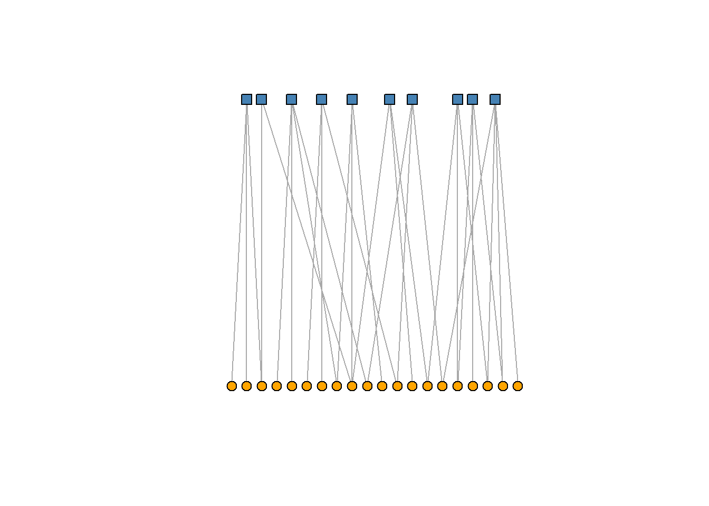
igraph는 또한 이분할 네트워크를 위한 특별한 레이아웃을 가지고 있다(비록 항상 잘 작동되는 것은 아니지만, 자신만의 이분할 레이아웃을 생성하고자 할 때 더 잘 표현할 수 있다).
plot(net2, vertex.label=NA, vertex.size=7, layout=layout_as_bipartite) 때때로 노드를 텍스트로 사용하는 것도 유용할 때가 있다 :
plot(net2, vertex.shape="none", vertex.label=nodes2$media,
vertex.label.color=V(net2)$color, vertex.label.font=2.5,
vertex.label.cex=.6, edge.color="gray70", edge.width=2)